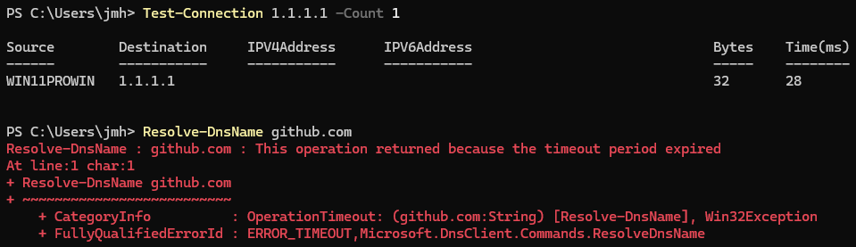
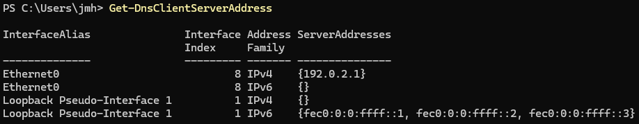
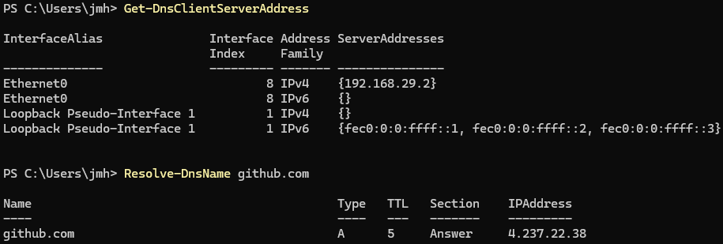
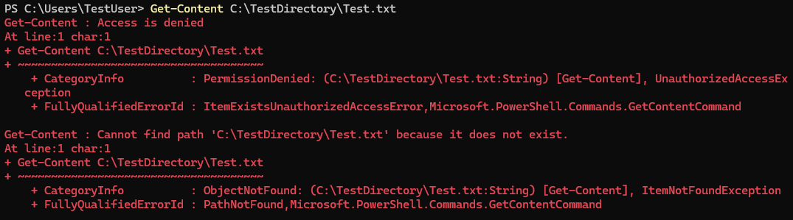
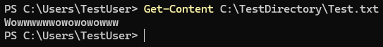
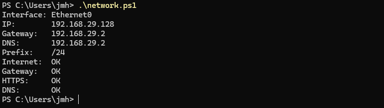

Windows Troubleshooting and PowerShell
Windows troubleshooting, diagnostics and PowerShell
Overview
This project documents a few common Windows troubleshooting scenarios one may encounter, all done in a Windows 11 virtual machine. I created scenarios involving DNS, NTFS permissions and the Spooler Windows service. I then worked through how I'd approach each problem if I were to encounter them using PowerShell and built-in Windows Tools. This was all done in a VMware virtual machine as to allow experimentation and breaking without affecting my main Windows installation.
DNS Resolution
Problem #1
I deliberately changed the Windows network adapter to use an invalid DNS server. After changing the configuration, Windows could still connect with external IP addresses, though domain names now no longer could be resolved.
I first confirmed that general connectivity was working with:
Test-Connection 1.1.1.1 -Count 1However non-surprisingly, DNS could not resolve:
Resolve-DnsName github.com
Investigation
Because communication with 1.1.1.1 was successful, I knew general internet connectivity was still ok and functioning. This implicated that the fault was most likely related to DNS rather than more general connectivity.
So I checked the configured DNS servers with:
Get-DnsClientServerAddressI found that the current adapter was configured to use 192.0.2.1, which was the same incorrect DNS server address I had inputted.

Cause/Fix
The problem was caused by a manually configured incorrect DNS server on the network adapter.
I fixed and restored the my DNS configuration with:
Set-DnsClientServerAddress -InterfaceAlias "Ethernet0" -ResetServerAddressesVerifying
After running the fix I checked to see if DNS was indeed working now:
Resolve-DnsName github.comAnd once again, the DNS look up was successful and returned me an IP address from github.com, therefore verifying that DNS resolution has now been restored.

NTFS Permissions
Problem #2
For this second scenario, I created a TestDirectory and file and configured an NTFS permission to prevent the TestUser from reading and/or executing the TestDirectory or any one of its file/s.
When I was logged in as the TestUser, I attempted to read the test file with:
Get-Content C:\TestDirectory\Test.txtBut this resulted in me getting an access denied error message:

Investigation
The file seems to exist in the expected location, so I investigated the directories NTFS access control list with icacls:
icacls C:\TestDirectoryThe output showed me an explicit deny for my TestUser. Therefore explaining why I couldn't just read this specific file with Get-Content:
Cause/Fix
The problem was caused from a explicit deny ACE applied to my TestUser. I then removed the deny entry via:
icacls C:\TestDirectory /remove:d TestUserHere the deny entry has been stripped from the TestUser all without touching any of the other permissions for this directory.
Verifying
After removing the deny entry, I logged back into TestUser and repeated the Get-Content command from earlier:
Get-Content C:\TestDirectory\Test.txtNow the contents of the file are being displayed to the terminal correctly, and confirming that my TestUser now has their permissions for this directory restored.

Print Spooler
Problem #3
For this third case I simulated a printing related issue by stopping the Windows Print Spooler service.
The service was stopped using:
Stop-Service SpoolerInvestigation
I first checked Spooler's service status with:
Get-Service SpoolerThe output showed me that the Spooler currently had the Stopped status.
Additionally to rule out any weird startup settings, I checked it's startup config:
Get-Service Spooler | Select-Object StartTypeThis confirms whether Spooler may have had just been stopped from it's startup configuration. And since it reported "automatic" I know its stopped state must have occurred during or after its startup for it to be this way.
Cause/Fix
The printing problem was caused by the Spooler service just not running. So naturally I started the Spooler service again:
Start-Service SpoolerVerifying
Once I had run Start-Service, I checked if Spooler was actually running with Get-Service:
Get-Service SpoolerGreat news for this weeks printing problem! the Spooler service's status has now been returned to Running; allowing us a sign of relief that printing (and the service) has been restored.
PowerShell Diagnostic Script
The Purpose
Along with these troubleshooting scenarios, I created a PowerShell script for some basic network diagnostics and connectivity verification.
The script is for identifying the current network interface, displaying useful configuration information, such as the IPv4 address, the default gateway, where the DNS Server located, what your IP prefix is, and additionally run a few connectivity tests to check everything is working alright.
$network = Get-NetIPConfiguration | Where-Object { $_.IPv4DefaultGateway }
Write-Host "Interface: $($network.InterfaceAlias)"
Write-Host "IP: $($network.IPv4Address.IPAddress)"
Write-Host "Gateway: $($network.IPv4DefaultGateway.NextHop)"
Write-Host "DNS: $($network.DNSServer.ServerAddresses)"
Write-Host "Prefix: /$($network.IPv4Address.PrefixLength)"
if (Test-Connection 1.1.1.1 -Count 1 -Quiet){
Write-Host "Internet: OK"
}
else {
Write-Host "Internet: Failed"
}
if (Test-Connection $network.IPv4DefaultGateway.NextHop -Count 1 -Quiet){
Write-Host "Gateway: OK"
}
else {
Write-Host "Gateway: Failed"
}
$https = Test-NetConnection github.com -Port 443 -WarningAction SilentlyContinue
if ($https.TcpTestSucceeded) {
Write-Host "HTTPS: OK"
}
else {
Write-Host "HTTPS: Failed"
}
if (Resolve-DnsName github.com -ErrorAction SilentlyContinue){
Write-Host "DNS: OK"
}
else {
Write-Host "DNS: Failed"
}So how does it work?
The script uses Get-NetIPConfiguration to retrieve network info, it then filters that for an interface which also has a default gateway; this avoids selecting otherwise disconnected or currently unused adapters.
After this it performs multiple checks with if-else conditional-logic testing a few different connections. The first test with the output "Internet" is for whether I can connect to an external IP without using a DNS server, the second with "Gateway" is for whether I can reach my default gateway; the third test "TCP" tests whether I can connect to an HTTPS port over TCP; and the fourth and final test "DNS" tests whether I can get name resolution.
If one of these tests fail, it helps me narrow down which part of connectivity might be causing the issue.
Script Output
Here I ran the script in PowerShell to test the network health of my machine:

Takeaways
This project and just my general Windows study and use, gave me practical experience troubleshooting and diagnosing several different types of Windows related problems rather than only knowing and applying predefined solutions. Here I demonstrated the ability to isolate DNS from general connectivity, how to check NTFS permissions and how to grant and revoke them, and the skills to manage Windows services if for some reason Spooler (among other services) is broken again.
I also learnt a bit of PowerShell and learnt about how it works, like for example: that it passes Objects/Structured Data mainly rather than just text streams like Bash or other common shells, which learning about was actually a lot of fun and very interesting. Overall I feel like I have improved my understanding of Windows and general troubleshooting from my learning here and in general.